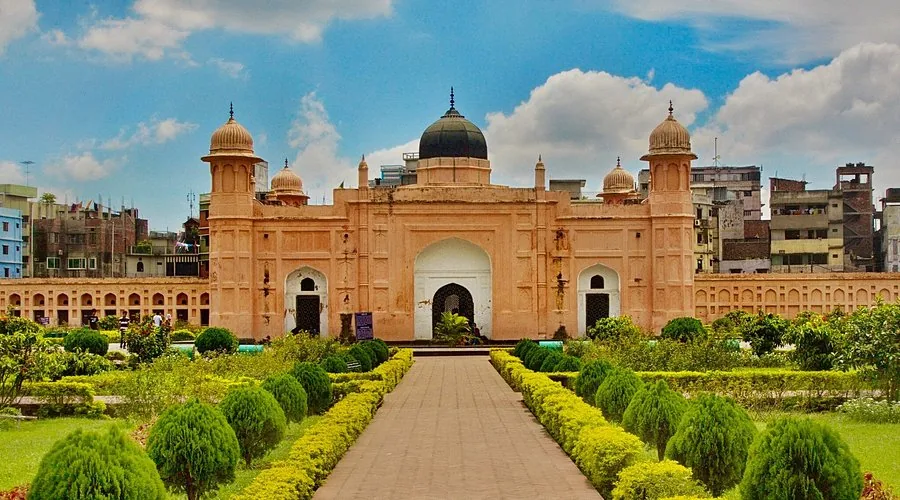
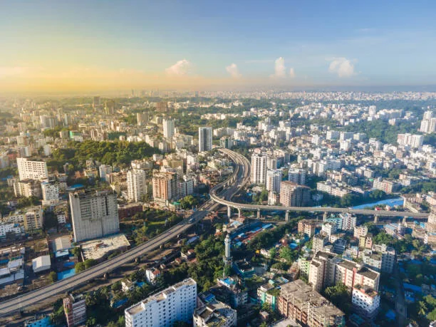
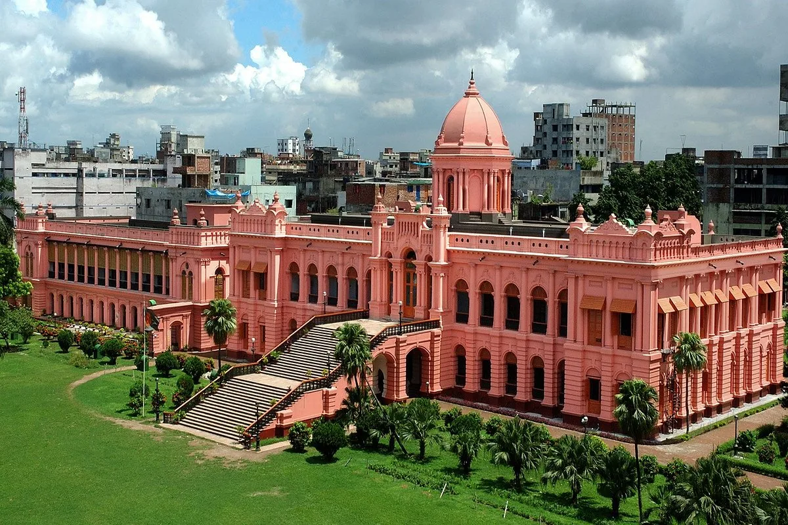
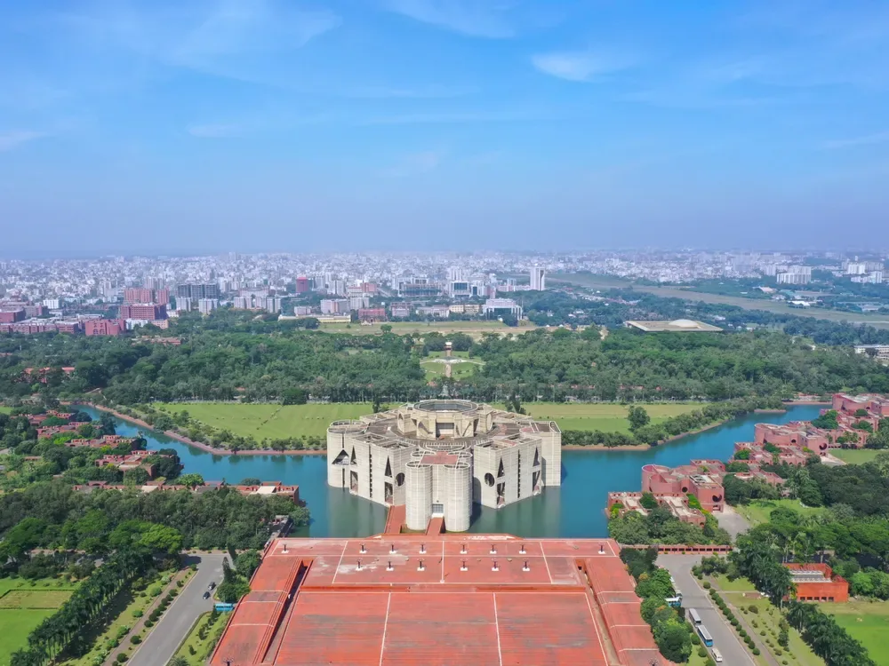
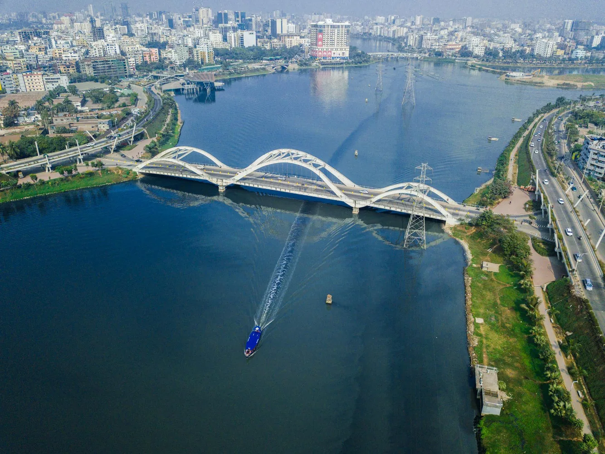

HISTORIC FORT
ラルバグ要塞
庭園と歴史的建築が印象的な、旧市街を代表するスポットです。

DHAKA / CAPITAL CITY
歴史的な旧市街と現代的な都市景観が共存する、バングラデシュの首都です。
ABOUT THE AREA
ダッカには、ムガル期の建築や旧市街の市場、近代建築など、異なる時代の景観が集まっています。街の交通量は多いため、訪問先をエリアごとにまとめると移動しやすくなります。
写真撮影や施設見学では、現地のルールと宗教文化への配慮を大切にしましょう。
PLACES TO SEE
写真と短い説明で、地域の特徴を紹介します。

庭園と歴史的建築が印象的な、旧市街を代表するスポットです。

鮮やかな外観で知られる歴史建築。現在は博物館として地域の歴史を伝えています。

幾何学的な造形が特徴的な近代建築。見学条件は事前に確認してください。

水辺と都市の景観を楽しめるエリア。夕方から夜にかけて雰囲気が変わります。
TRAVEL NOTES
安全で気持ちのよい旅にするための基本的な注意点です。
道路の混雑が発生しやすいため、予定には余裕を持たせます。
宗教施設では露出を控え、撮影前に許可を確認します。
衛生状態を確認し、飲料水は密封されたものを選ぶと安心です。
MAP
外部地図サービスを利用しています。